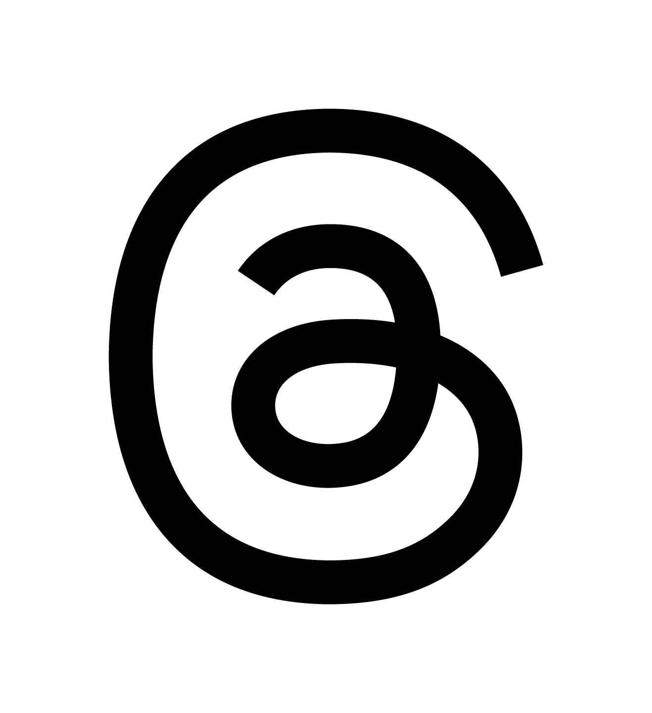
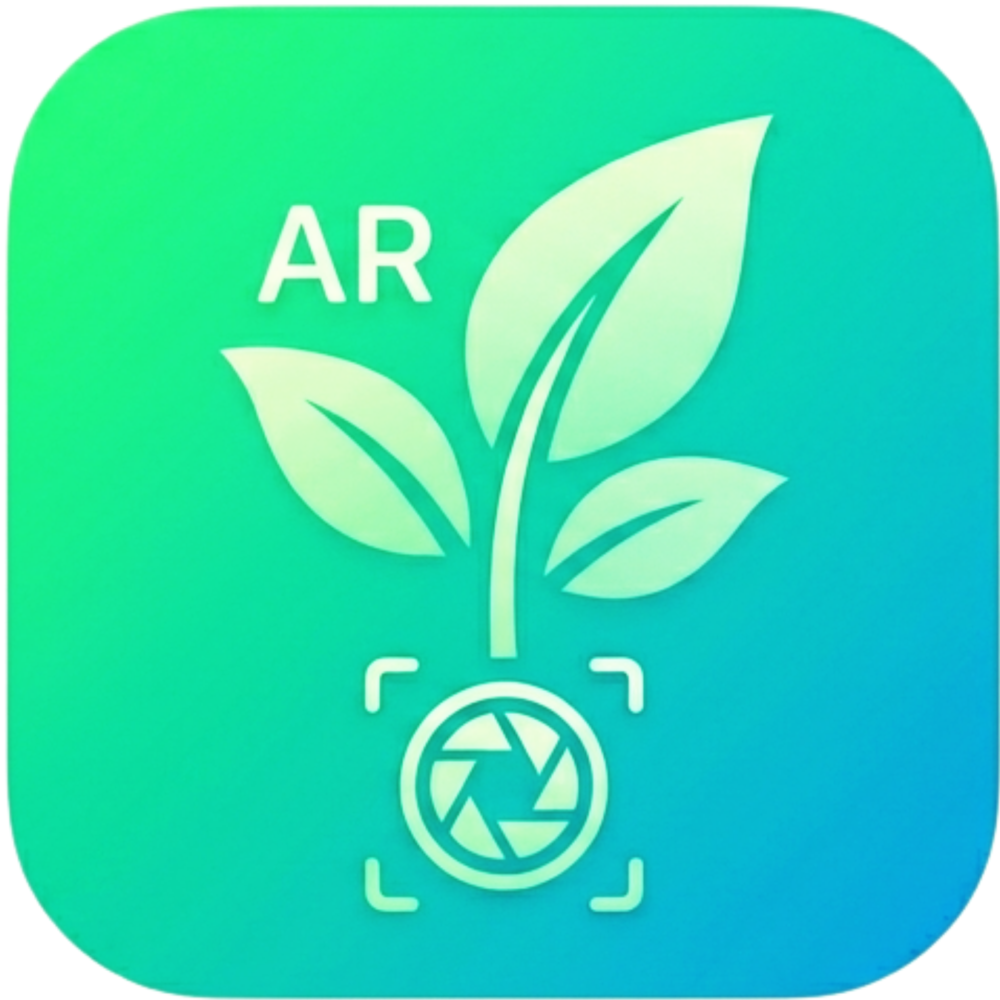

当たり判定を広げたことでタップ感度が下がってしまったのには、**「透明な板同士がくっついてしまったこと」と「システム側のタップ検知の遅延」**という2つの原因が隠れていました。

これを劇的に改善する3つの解決策をコードに盛り込みました！

タップ感度を爆速にする3つの改善ポイント
スマホ最速のタップ判定（touchstart）の復活
以前は「別タブで開く」設定だったためスマホのセキュリティに弾かれて使えませんでしたが、現在は「同じ画面で開く」設定になったため、指が画面に触れた瞬間に反応する touchstart を安全に復活させることができます！これでスマホ特有の「タップ後のワンテンポ遅れ」が完全に消えます。

当たり判定の干渉（重なり）をなくす
当たり判定を 0.5 にしたことで、上下の板のフチがピタッとくっついてしまい、システムが「どっちをタップしたんだ！？」と迷ってフリーズしやすくなっていました。板のサイズを 0.45 に微調整し、板と板の間に「5cmの隙間」を作ることで誤作動をなくしました。

Raycaster（見えない光線）のチェック頻度を最高にする
コードにあった interval: 100（0.1秒に1回だけタップをチェックする設定）を削除し、常に最速で指の動きを監視するようにしました。

キャッシュ回避のため、URLも ?v=103 に変更しています。以下のコードに差し替えてみてください！

HTML
<!DOCTYPE html>
<html>
  <head>
    <meta charset="utf-8" />
    <title>AR HOME + SNSリンク</title>
    <script src="https://aframe.io/releases/1.4.2/aframe.min.js"></script>
    <script src="https://raw.githack.com/AR-js-org/AR.js/master/aframe/build/aframe-ar.js"></script>
    <script src="https://cdn.jsdelivr.net/gh/c-frame/aframe-extras@7.4.0/dist/aframe-extras.min.js"></script>
    
    <script>
      AFRAME.registerComponent('open-link', {
        schema: { url: { default: '' } },
        init: function () {
          const navigate = () => { window.location.href = this.data.url; };
          // clickに加えて、スマホで触れた瞬間に即反応するtouchstartを追加！
          this.el.addEventListener('click', navigate);
          this.el.addEventListener('touchstart', navigate);
        }
      });
    </script>
  </head>
  
  <body style="margin: 0; overflow: hidden;">
    
    <a-scene embedded arjs="sourceType: webcam; debugUIEnabled: false;" 
             cursor="rayOrigin: mouse;"
             raycaster="objects: .clickable;"
             gltf-model="dracoDecoderPath: https://www.gstatic.com/draco/v1/decoders/;">
      
      <a-assets>
        <a-asset-item id="hakase-model" src="https://rockhill-jp.github.io/ar-home/hakase_temaneki-v1-light.glb?v=103"></a-asset-item>
        
        
        
        
        
        
      </a-assets>

      <a-light type="ambient" color="#ffffff" intensity="1.5"></a-light>
      <a-light type="directional" position="1 2 1" intensity="1"></a-light>
      
      <a-entity gltf-model="#hakase-model" 
                scale="0.3 0.3 0.3" 
                position="0 0.3 -2"
                animation-mixer="clip: *;">
      </a-entity>
      
      <a-entity position="0.4 1.0 -2">
        <a-image src="#insta-icon" width="0.2" height="0.2"></a-image>
        <a-plane class="clickable" width="0.45" height="0.45" position="0 0 0.1" material="opacity: 0; transparent: true" 
                 open-link="url: https://www.instagram.com/rockhillplants?igsh=b2w1N2h6MHptMjcy&utm_source=qr"></a-plane>
      </a-entity>

      <a-entity position="-0.4 1.0 -2">
        <a-image src="#yt-icon" width="0.2" height="0.2"></a-image>
        <a-plane class="clickable" width="0.45" height="0.45" position="0 0 0.1" material="opacity: 0; transparent: true" 
                 open-link="url: https://www.youtube.com/@rockhill-jp"></a-plane>
      </a-entity>

      <a-entity position="0.4 0.5 -2">
        <a-image src="#x-icon" width="0.2" height="0.2"></a-image>
        <a-plane class="clickable" width="0.45" height="0.45" position="0 0 0.1" material="opacity: 0; transparent: true" 
                 open-link="url: https://x.com/rockhilljapan?s=21&t=uYQ5pHasPAQtFJYw6d434Q"></a-plane>
      </a-entity>

      <a-entity position="-0.4 0.5 -2">
        <a-image src="#base-icon" width="0.2" height="0.2"></a-image>
        <a-plane class="clickable" width="0.45" height="0.45" position="0 0 0.1" material="opacity: 0; transparent: true" 
                 open-link="url: https://rockhill.official.ec"></a-plane>
      </a-entity>

      <a-entity position="0.4 0.0 -2">
        <a-image src="#threads-icon" width="0.2" height="0.2"></a-image>
        <a-plane class="clickable" width="0.45" height="0.45" position="0 0 0.1" material="opacity: 0; transparent: true" 
                 open-link="url: https://www.threads.com/@rockhillplants?igshid=NTc4MTIwNjQ2YQ=="></a-plane>
      </a-entity>

      <a-entity position="-0.4 0.0 -2">
        <a-image src="#pa-icon" width="0.2" height="0.2"></a-image>
        <a-plane class="clickable" width="0.45" height="0.45" position="0 0 0.1" material="opacity: 0; transparent: true" 
                 open-link="url: https://rockhill-jp.github.io/ar-plants/"></a-plane>
      </a-entity>
      
      <a-camera></a-camera>
    </a-scene>
    
  </body>
</html>
